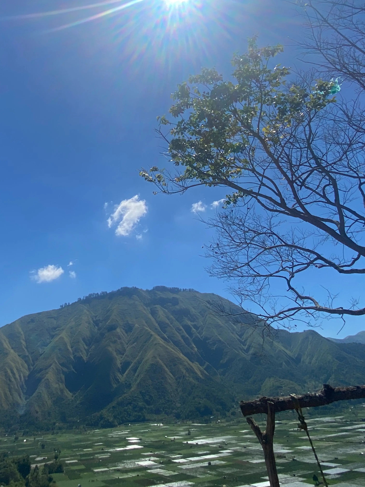

By the AVENTRA team in Senaru · 21 October 2026
Every year Mount Rinjani produces around 11 tons of waste — and about 10 tons of it comes from trekking. To bring that number down, the Mount Rinjani National Park authority (Balai TNGR) now enforces strict zero waste rules: single-use plastic is not allowed on the mountain, and every trekker must carry food and drinks in reusable containers. Since 2025, Rinjani has been the pilot zero waste national park for the whole of Indonesia.
The savanna of Sembalun, the rainforest of Senaru and the turquoise Segara Anak crater lake draw trekkers from the Netherlands, France, Germany, Spain and all over the world. But for years, the beauty of this 3,726 m volcano — the second-highest in Indonesia — was spoiled by plastic left along the trails and at the campsites.
Why waste is hard to manage on Rinjani
According to the national park office, about 140,000 people climbed Rinjani in 2023, and visitor numbers have kept growing since the pandemic. More trekkers means more waste — which pollutes water sources, harms wildlife and threatens Rinjani's status as part of the Rinjani-Lombok UNESCO Global Geopark.
Rinjani is also a big mountain to watch over. There are six official trekking routes spread across three regencies:
- North Lombok: Senaru and Torean
- East Lombok: Sembalun, Timbanuh and Tetebatu
- Central Lombok: Aik Berik
Many trekkers go up one route — for example the summit trek from Sembalun — and come down another, such as Senaru or Torean. With a limited number of rangers, checking every exit is a real challenge. Closing routes is not the answer either: thousands of local people in villages like Senaru and Sembalun make their living from Rinjani trekking. The solution is cooperation.
The Rinjani Zero Waste declaration and today's rules
In September 2024, the national park, local government, trekking organisers, guides and village communities met in Sembalun and signed the Rinjani Zero Waste Trekking declaration. From April 2025 the rules were enforced across the mountain. Here is what you need to know before you plan your Rinjani trip:
| Rule | What the park requires | What it means for you |
|---|---|---|
| Daily quota | Each route has a daily limit on trekkers, booked online through the official eRinjani system. | Book early, especially in the peak months of July and August. We arrange the booking for you. |
| Seasonal closure | All routes close every year from January to March. | Time for the forest to recover and for big clean-ups. Plan your trek between April and December. |
| No single-use plastic | Single-use food and drink packaging is not allowed on the trail. | All food and drinks must be repacked into reusable containers before you start. |
| Items are recorded | Rangers record what you carry up — the quantity, type and packaging. | What goes up must come down. Leftover waste is checked when you return. |
Local partners are joining in too. In June 2026 the national park signed an agreement with TPS3R Arung Rinjani, the waste facility in Senaru village, to transport waste collected from the trekking routes.
How AVENTRA supports Rinjani Zero Waste
From years of guiding on Rinjani, we have learned that real change starts with the habits of the team on the trail. That's why every AVENTRA trek follows the zero waste rules — not as a slogan, but in how we work:
- Reusable logistics. Before the team leaves for the trailhead, we repack all food, spices and drinks into airtight reusable containers. No single-use plastic bottles or snack wrappers go up the mountain with us.
- A bonus for carrying waste down. Guides and porters are the real guardians of the mountain. On top of their normal pay, we give an extra bonus to every guide and porter who carries waste down — our own and any rubbish from other trekkers they find on the trail.
- A short briefing for every group. Before each Rinjani sharing group sets off, our guide explains the park rules and asks everyone to keep their personal waste — wet wipes, energy bar wrappers, plasters — until we are back at the trailhead.
Tips for an eco-friendly Rinjani hike
- Bring your own water bottle. A steel or BPA-free bottle of at least 1.5 litres. Our porters prepare clean drinking water at every campsite for you to refill.
- Use dry bags or strong zip bags. Keep clothes and gear in reusable waterproof bags. Thin plastic bags tear easily and blow away in the wind on the crater rim.
- Carry a small trash pouch. Keep it in the side pocket of your daypack for sweet wrappers and other small rubbish on the way to the summit.
- Pack light and smart — see our Rinjani packing list.
- Choose a responsible trekking organiser. When you compare Rinjani trekking package prices, look beyond the cheapest offer. Ask how the team handles waste and how it treats its crew. Our prices are published openly, with no hidden fees.
Plan your zero waste Rinjani trek
Standing on the summit of Mount Rinjani means more when you know you left nothing behind. The plastic-free rules don't limit your adventure — they make sure the next generation can still see Segara Anak lake as blue and clean as it is today.
Whether you're a Rinjani backpacker on a budget or a first-time trekker, AVENTRA's sharing group treks come with full facilities and an affordable, transparent price:
- 2D1N Summit — summit sunrise via Sembalun, from $127 Trek Only
- 3D2N Summit & Lake — summit, crater lake and hot springs, our most popular trek
- 2D1N Senaru Crater Rim — the crater rim views without the night summit climb
- 2D1N Setampol Green Summit — a quiet route away from the crowds
Not sure which trek fits you? Read the best time to climb Rinjani, or message us — we'll help you choose.
Sources
Questions? We usually reply within minutes.
Chat on WhatsApp